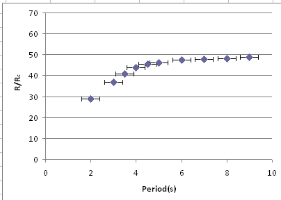

This project was my undergraduate honors thesis. When you heat and cool a column of liquid on opposite sides, the heat will transfer through the liquid either by conduction or convection, depending on the viscosity and heat difference. If the viscosity is low and the temperature difference enough, convection will occur. At a particular temperature, the buoyant force will exactly match the force of gravity, resulting in periodic convection. If you increase the temperature, the period of this motion will double at a particular temperature. Eventually, it will continue to double until it reaches chaotic motion. In this project, convection currents were made in a small container of water and measured using a laser. This is possible because local changes in density of the water slighly deflect the laser. In addition, the Rayleigh number (related to the temperature) is derived from dimensional analysis. Pictured is a graph of the Rayleigh number vs. the period. It shows the period increase until it asymptotically approaches the temperature value where the motion becomes chaotic. Also shown is a youtube video with an example of Rayleigh-Benard convection.
